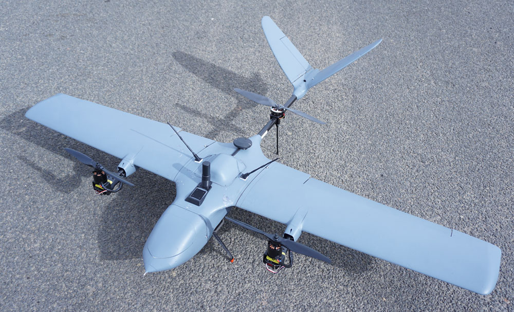
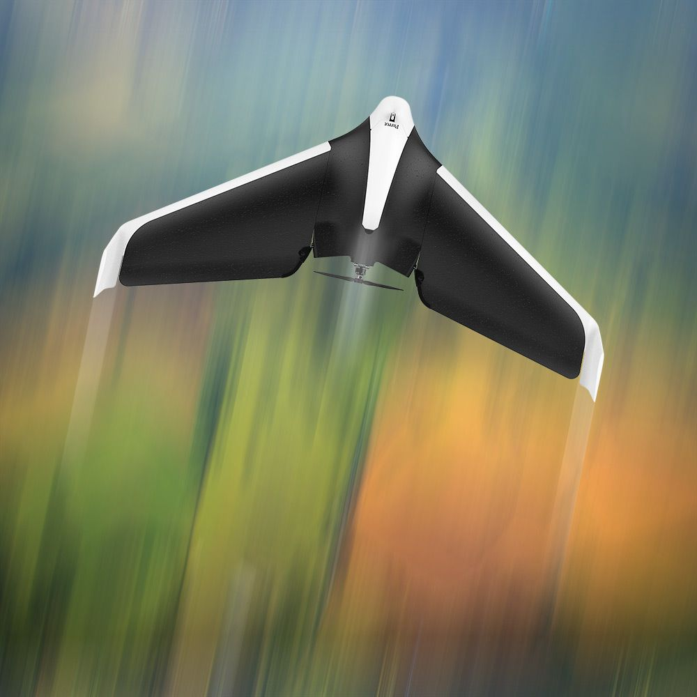

The WingtraOne PPK VTOL is a fixed-wing, fully autonomous drone that has been specifically designed to cover long distances. It allows for a flight pre-plan due to its intelligent WingtraPilot software. The WingtraOne can automatically capture surveying data at the touch of a button. The WingtraOne also has the impressive ability to set off vertically like a quadcopter, even on difficult terrain removing the need to launch or catapult the aircraft.It’s capable of flying for up to 55 minutes and has been designed to cover long distances.
Parrot was an early pioneer of intelligent multirotor drones. The Parrot AR drone might seems positively primitive now, but at the time it was an amazing feat of consumer technology.The deal is made even sweeter with the inclusion of FPV goggles, but you do need a smartphone to act as the screen. The Parrot Skycontroller 2 does duty as the transmitter and gives you a 1.2 mile rangeThat might sound like plenty, but given that the Disco will reach a whopping 50 mph , it could be out of range in less than a minute if you floor it.Camera duties are performed by a 14 megapixel 1080p camera with a wide-angle lens .To top it off, it’s rated for 45 minutes of flight time.
 